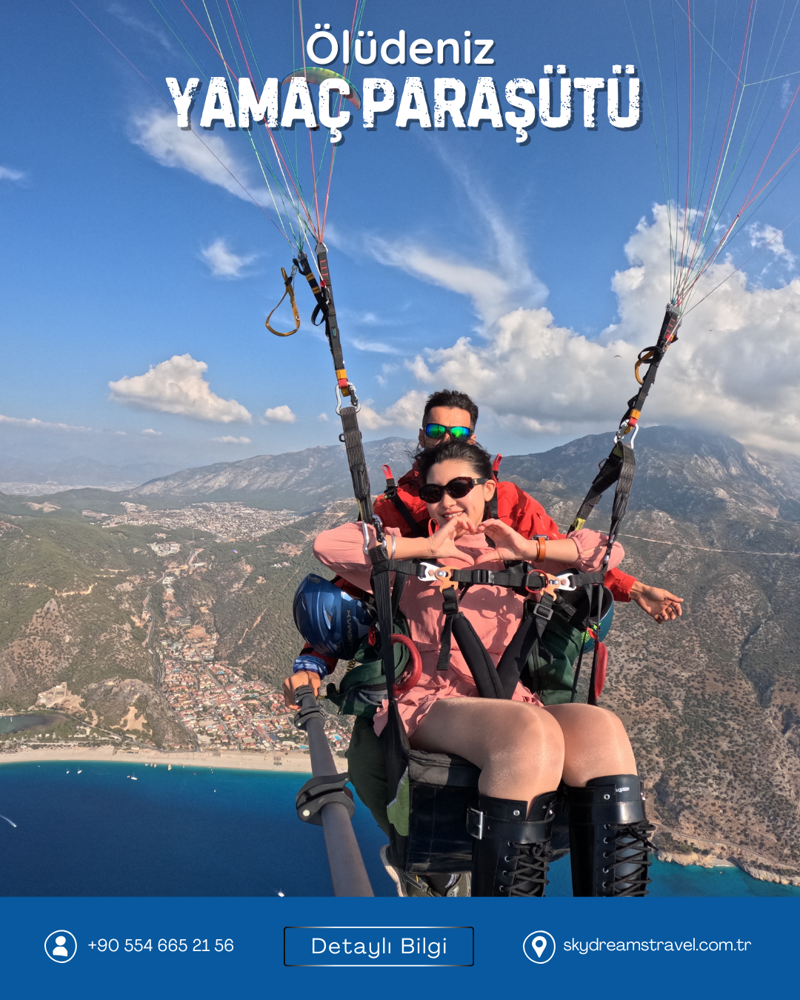
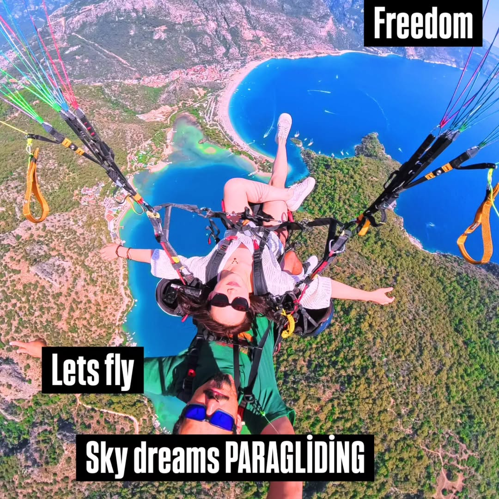
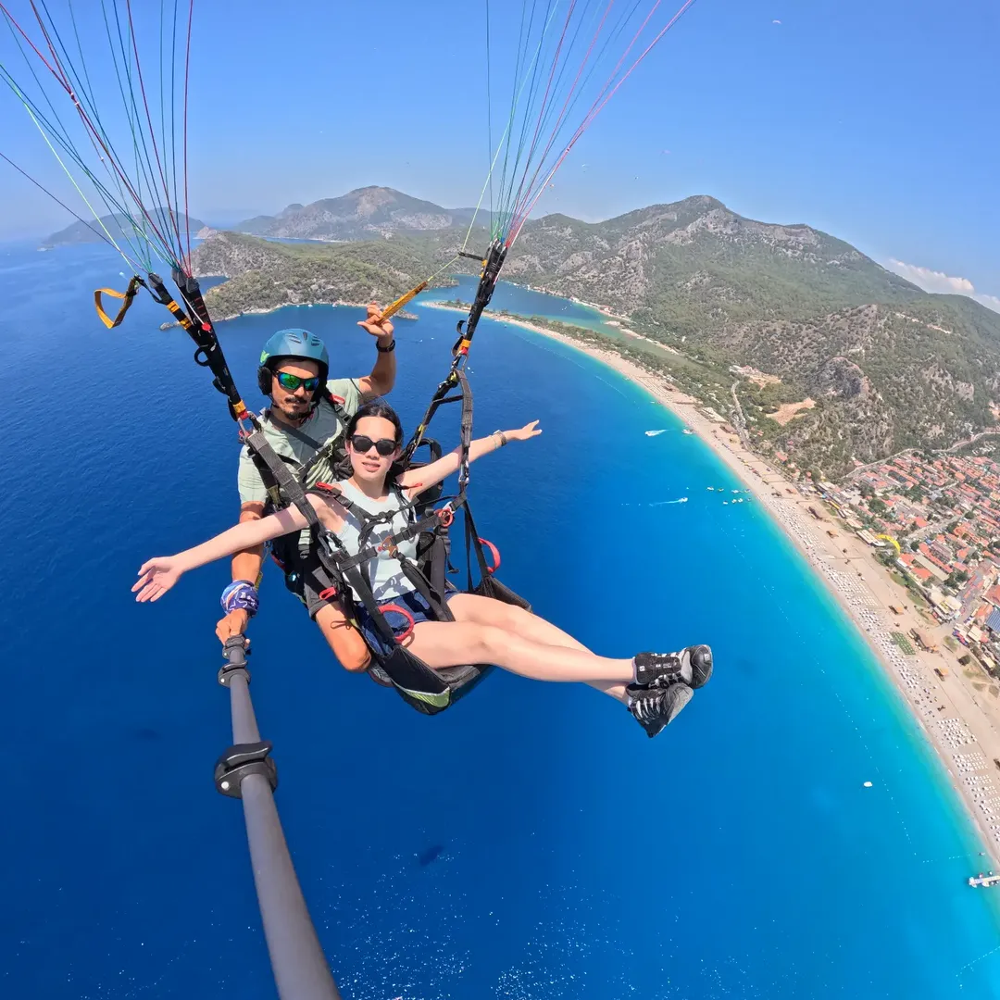
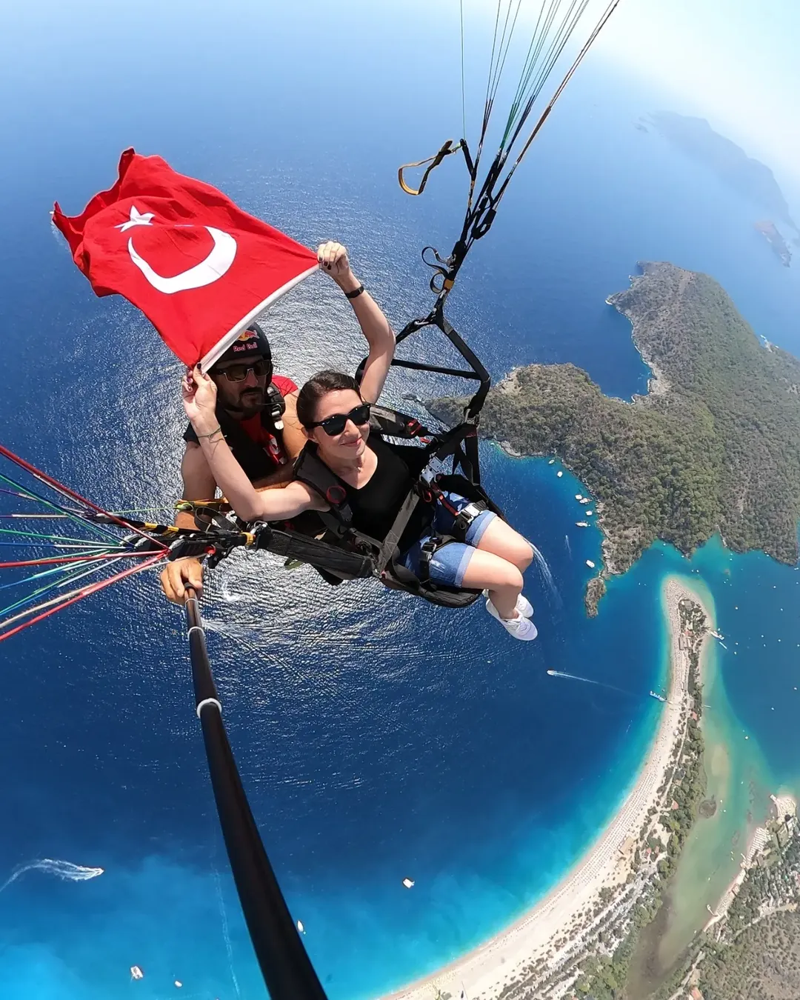
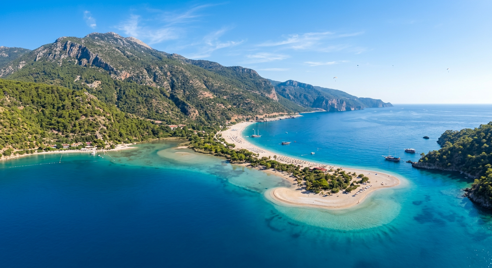
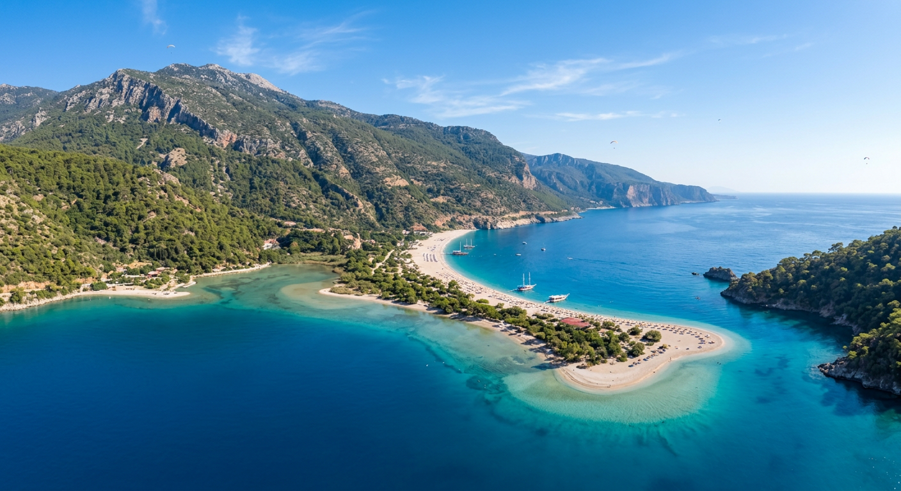

"Hayatımın en güzel deneyimiydi! Pilot son derece profesyoneldi, kendimi her an güvende hissettim. Babadağ'dan Ölüdeniz'e süzülmek kelimelerle anlatılamaz. Sky Dreams Travel'a çok teşekkürler!"

Babadağ · 1969m · Ölüdeniz
Türkiye'nin En İyi Yamaç Paraşütü Noktası Ölüdeniz'de
FAI Lisanslı Profesyonel Pilotlarla Tandem Uçuş
Fotoğraf Galerisi
Babadağ'dan Ölüdeniz'e uzanan her uçuşun kendi büyüsü var. İşte o anların bir kısmı.






Müşteri Yorumları
"Hayatımın en güzel deneyimiydi! Pilot son derece profesyoneldi, kendimi her an güvende hissettim. Babadağ'dan Ölüdeniz'e süzülmek kelimelerle anlatılamaz. Sky Dreams Travel'a çok teşekkürler!"

"İlk başta çok korktum ama pilot o kadar sakin ve güven verici ki hemen rahatladım. Gökyüzünden Ölüdeniz'in turkuaz rengi gözlerime işledi. Bu deneyimi herkese yaşatmak isterim!"

"Fethiye'ye her gittiğimizde Sky Dreams Travel ile uçuyoruz, bu artık bir gelenek oldu! GoPro çekimleri muhteşem çıktı, hâlâ izleyip duygulanıyorum. Ekibin sıcaklığı ve profesyonelliği ayrı bir güzellik."
Sık Sorulan Sorular
Güncel fiyatlarımız paket içeriğine ve sezona göre değişmektedir. Şeffaf ve gizli ücret içermeyen fiyatlarımız için WhatsApp'tan bize ulaşabilirsiniz. En iyi fiyat garantisi veriyoruz.
Fiyatlarımız pakete ve sezona göre değişmektedir. Gizli ücret olmayan, şeffaf ve güncel fiyatlar için WhatsApp'tan bize yazabilirsiniz. En iyi fiyat garantisi uyguluyoruz.
Standart tandem uçuş 25-30 dakika, Premium uçuş 35-40 dakika sürmektedir. Babadağ (1969m) zirvesinden Ölüdeniz plajına iniş yapılır.
Minimum yaş 5, maksimum ağırlık 110 kg'dır. 18 yaş altı misafirlerimiz için veli onayı gerekmektedir. Sağlık sorununuz varsa lütfen önceden bilgi veriniz.
Evet, tamamen güvenlidir. Tüm pilotlarımız FAI onaylı lisanslı profesyonellerdir. 10+ yıllık tecrübemiz ve uluslararası standartlardaki ekipmanlarımızla güvenli uçuş garanti ediyoruz. Ekipmanlarımız düzenli olarak denetlenmekte ve bakımı eksiksiz yapılmaktadır.
Evet! Fethiye merkezi ve Ölüdeniz otellerinden ücretsiz servis hizmeti sunuyoruz. Rezervasyon sırasında otel adresinizi belirtmeniz yeterli.
Fethiye Ölüdeniz'deki en iyi yamaç paraşütü deneyimi için hemen bize ulaşın. Sizi gökyüzünde bekliyoruz!
WhatsApp'tan Rezervasyon Yap